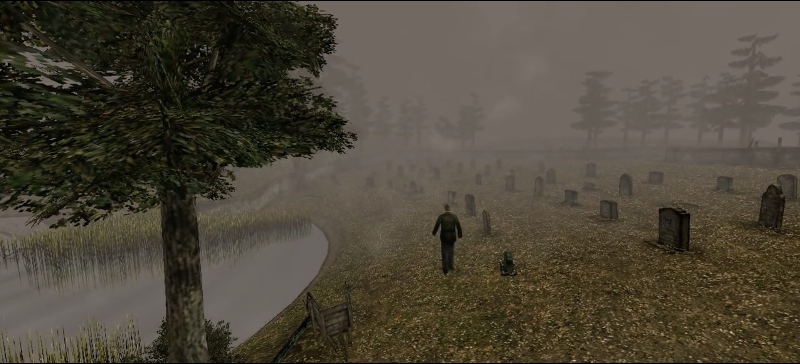

Endings
Spoilers Ahead

Silent Hill 2 boasts six endings, none of which are confirmed to be canonical. Meaning, all of these could be the "true" ending, depending on the player's play-style and preference.
Leave
To unlock this ending, James must not be too self-destructive and must favor Mary over Maria. This can be achieved by healing
Maria

In Water